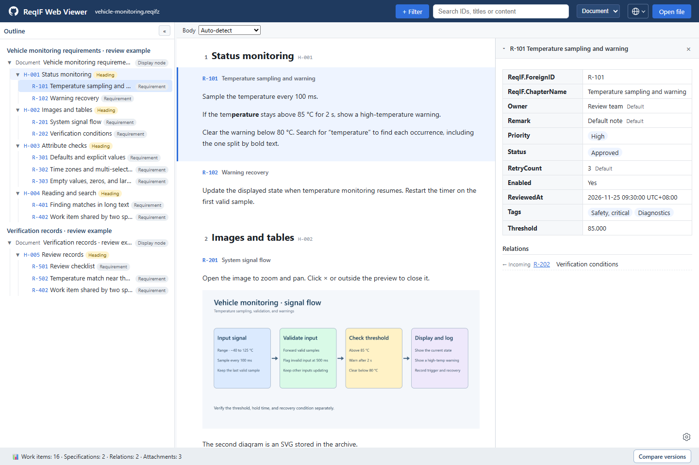
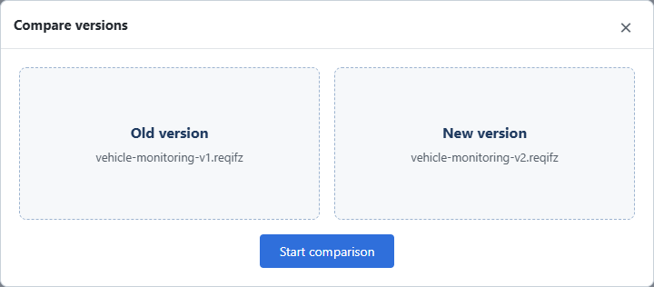
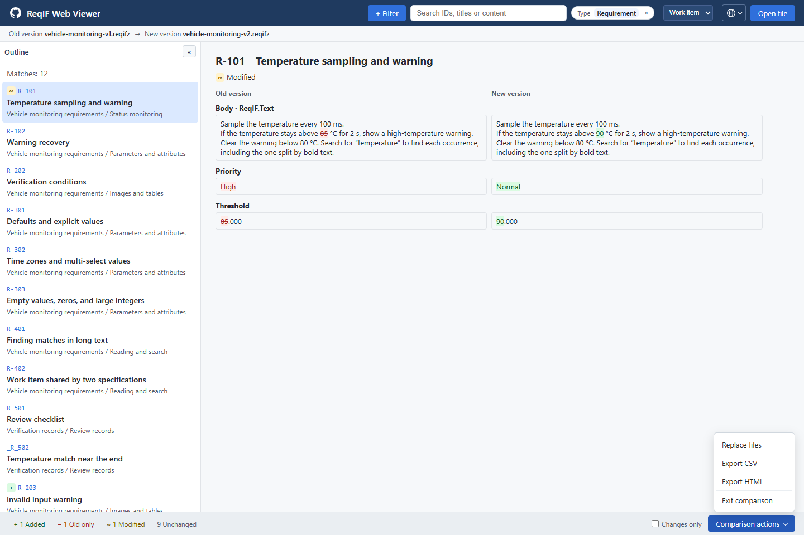
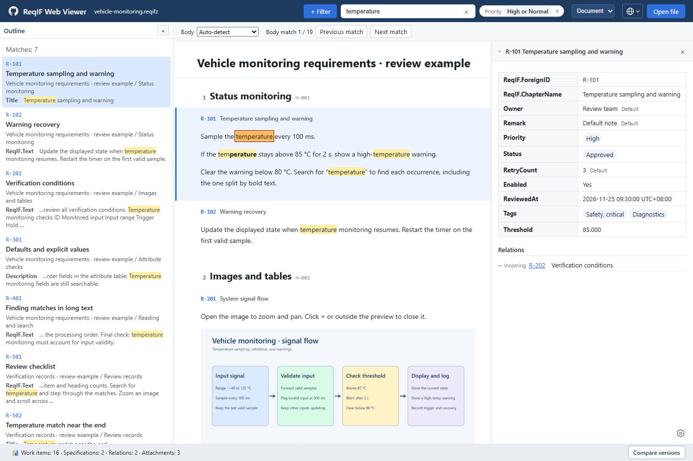
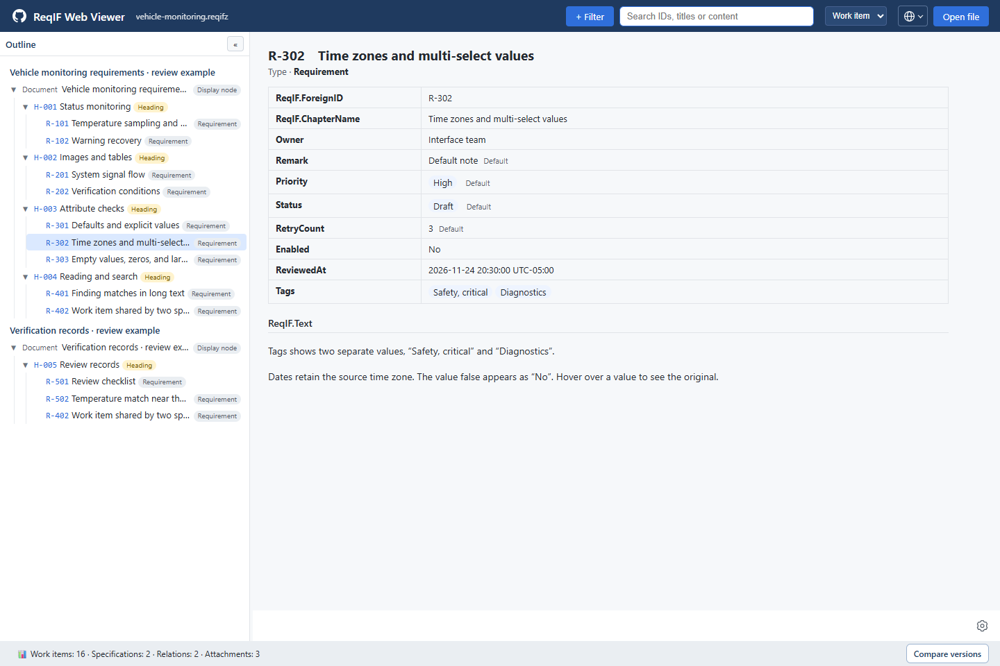
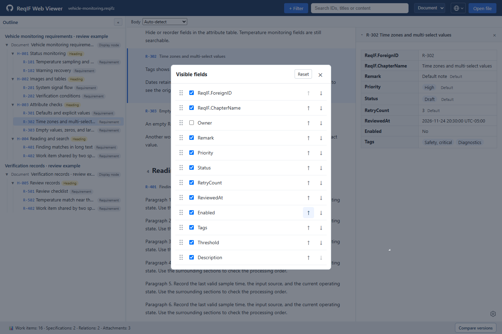
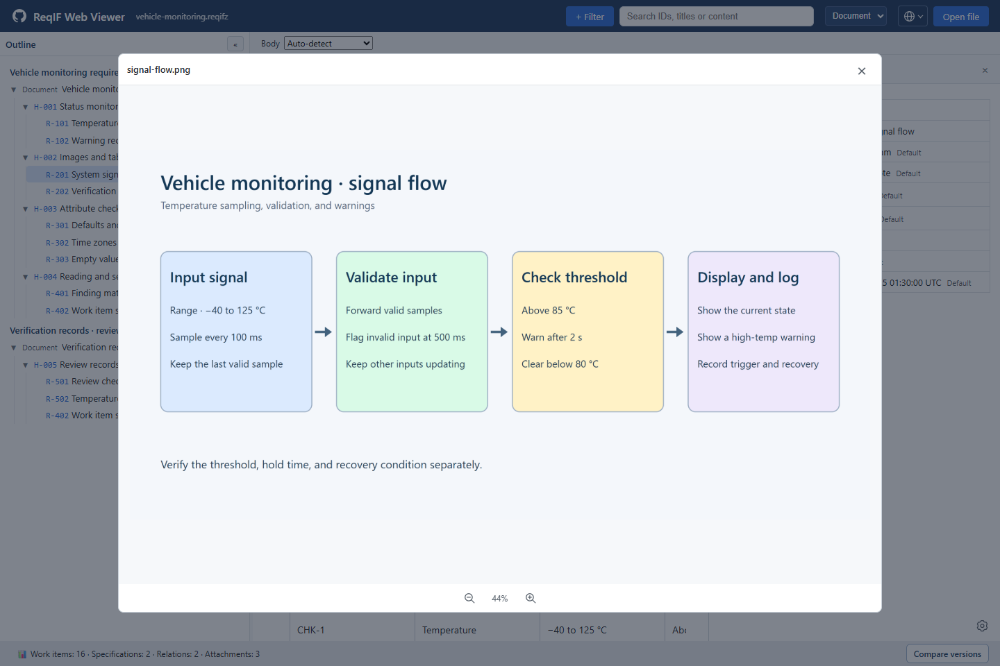
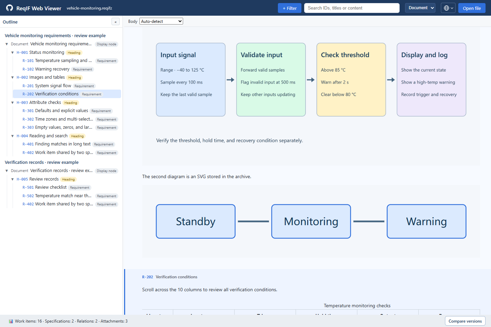
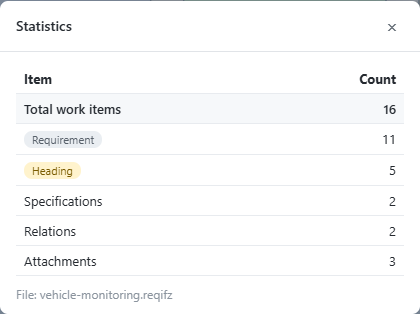

Document and work item views
Read specifications in order or open an individual work item from the outline. Choose which field to display as the body.
Read and search requirements in local ReqIF and ReqIFz files, or compare two versions. Your files stay in your browser.

ReqIF files carry chapters, text, attributes, and attachments together. Read a specification in order or find a requirement by ID or keyword.
Open a local file to read the document and inspect individual work items. For offline use, download the source and open index.html.
These screenshots use a fictional vehicle-monitoring specification in English. Select an image to see it at full size.
Read specifications in order or open an individual work item from the outline. Choose which field to display as the body.
Match all or any keywords across IDs, titles, and text, and combine attribute filters. See the hit count and jump between highlighted matches.
Use the gear in the work item panel to choose and reorder fields. Defaults are marked, and dates retain their time zones.
Review additions, items only in the old file, edits, and unchanged items. Export a CSV or an offline HTML report.
Images fit the window when opened. Zoom or drag to inspect details, scroll wide tables in place, and download other attachments.
Follow incoming and outgoing links. Statistics count each source work item once and exclude display titles.
Choose the old and new files, then filter by type to update the counts. Open a work item to see changes and export CSV or HTML from the menu at the bottom right.


Search for “temperature” and select High or Normal priority. Results show the matching field, an excerpt, and the chapter path. Open a result to step through matches in the body.

Open field settings from the work item panel. Hover over a value to see it as stored in the file.


Click × or outside the window to close an image or the field settings.


A work item counts once, even if several specifications reference it. Titles added from specification names appear as display nodes.
Statistics also show specifications, relations, and attachments. This example has 16 work items, including 5 headings and 11 requirements.

The viewer runs in your browser without installation. Choose your local file each time you open the page.
Click Open file or drag a file onto the page.
A ReqIFz archive should contain one ReqIF document and may include images and other attachments.
Use the outline, search, filters, or links to find a work item and switch between the two views.